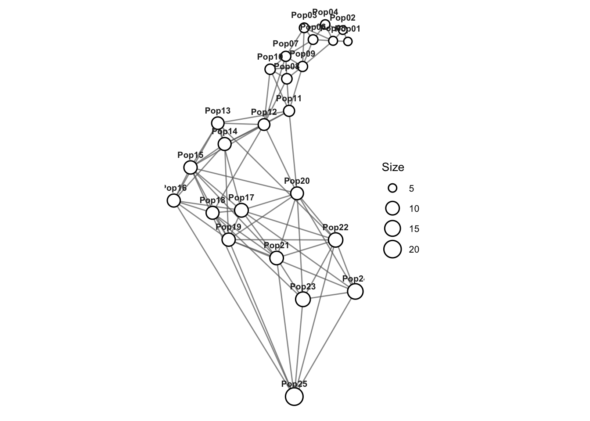
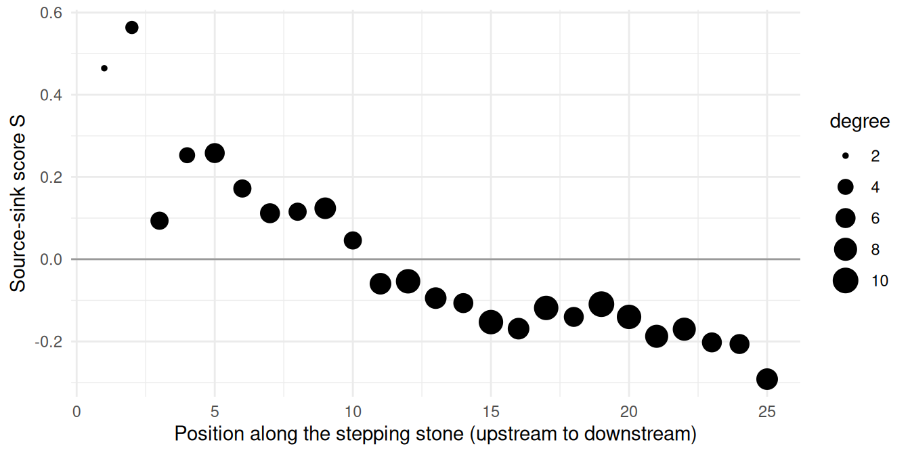
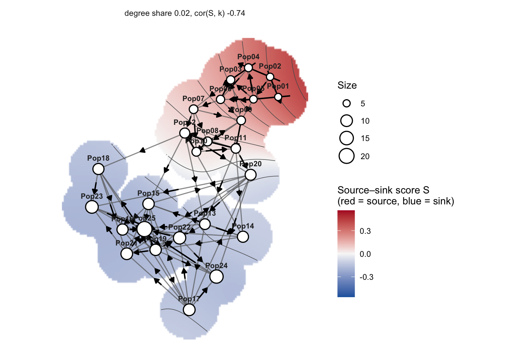
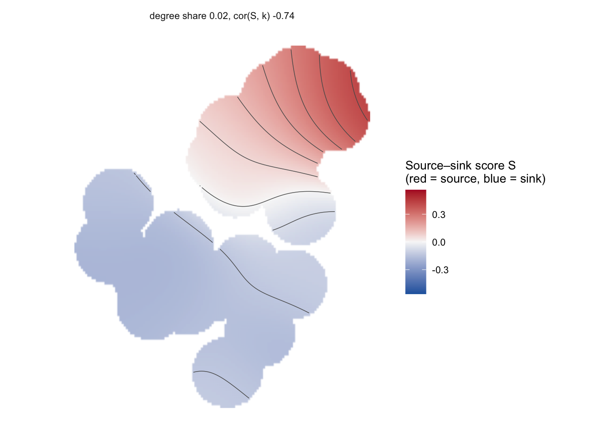
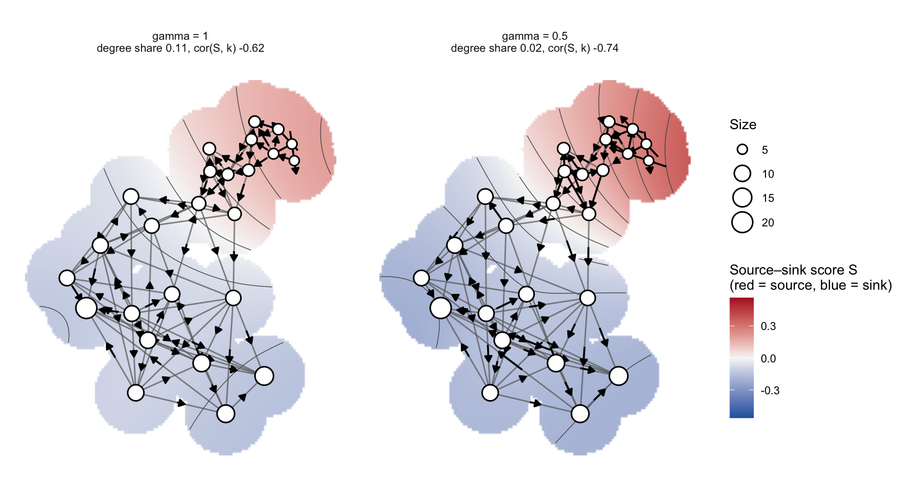
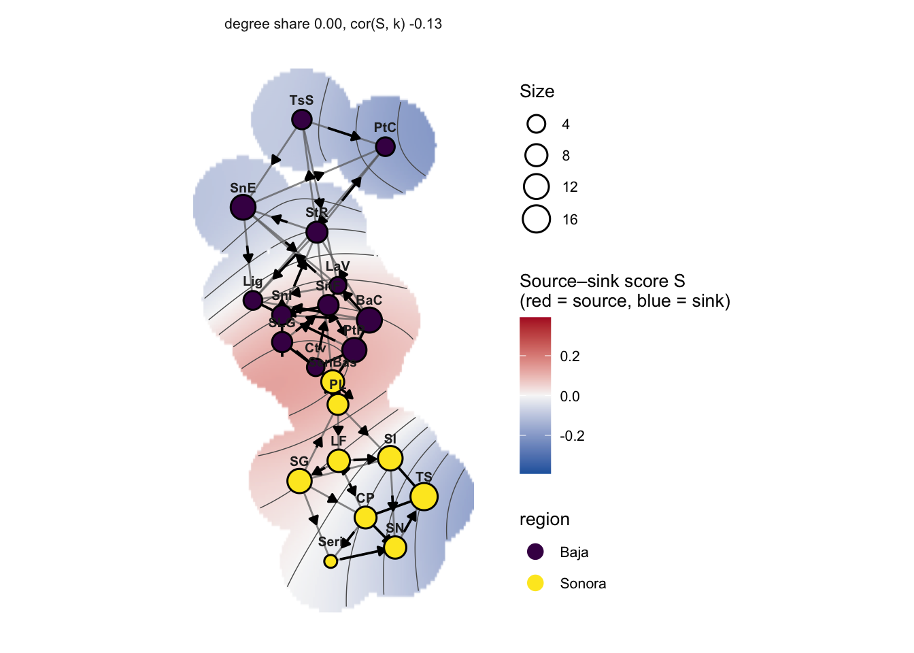
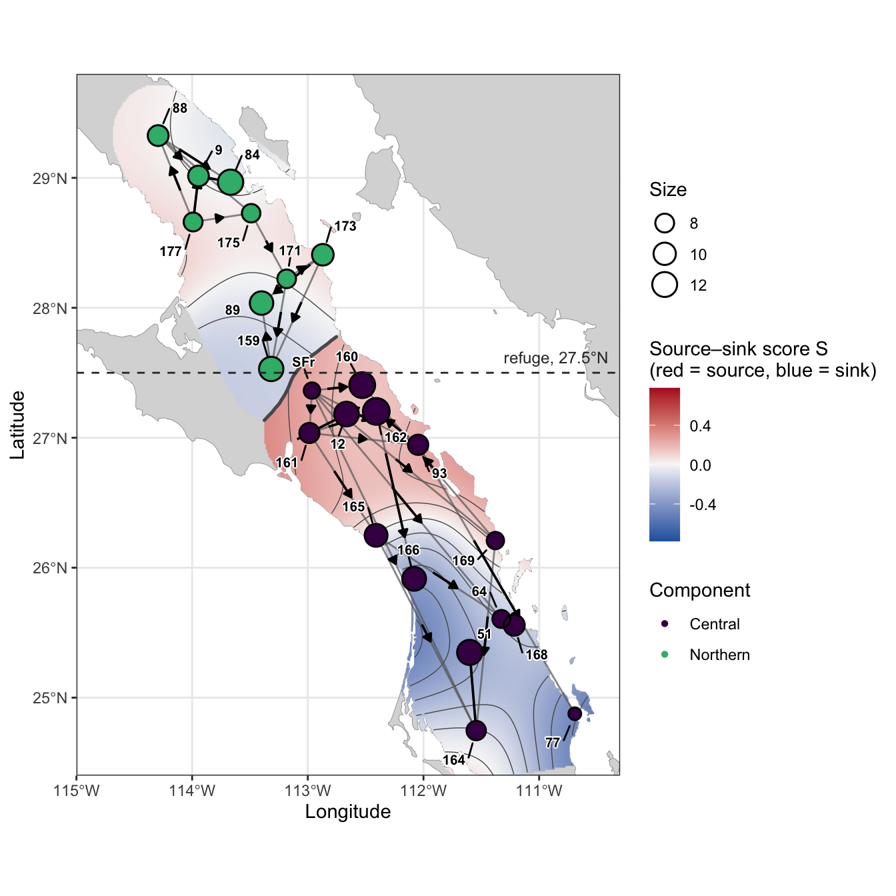
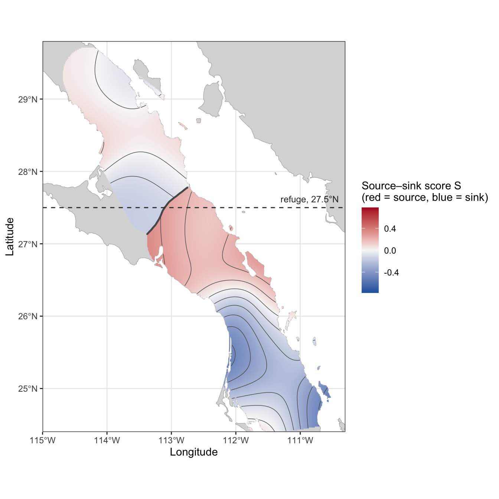
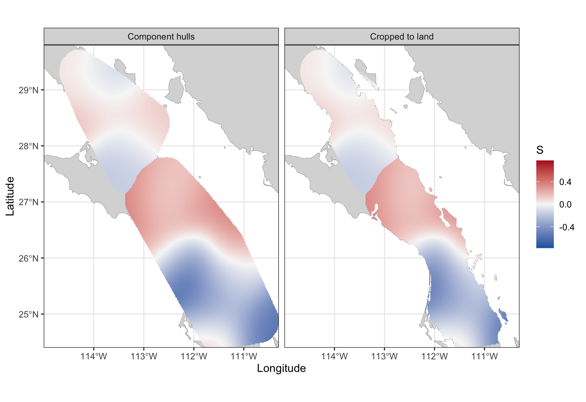

library( gstudio )
library( dplyr )
library( ggplot2 )9 Genetic Gravity
A Population Graph is undirected: each edge is a single, symmetric conditional genetic distance between two populations. Genetic gravity reads direction out of that symmetric graph by asking, for every edge, how near it looks from each of its two ends. It needs no demographic model, no assumption of migration-drift equilibrium and no covariates, and it works from a single sample (Dyer 2026). Despite the shared name, it is unrelated to the gravity models of landscape genetics (Murphy et al. 2010; DiLeo et al. 2014), which regress connectivity between sites on at-site and between-site covariates. Nor is it a pairwise estimator of directional migration such as divMigrate (Sundqvist et al. 2016): every edge is read in the context of the whole conditional network, so gene flow from \(A\) to \(C\) through \(B\) is not mistaken for direct exchange between \(A\) and \(C\).
The few quantities involved are set out first, followed by a complete analysis, from raw genotypes to a Population Graph, source-sink scores, tests for a directional gradient and a map of the gravity field.
The code below is written as pipelines, with each function on its own line. Every gstudio function takes its data as the first argument, so the same calls also work in the older style, with options such as stratum = passed as arguments; those versions are collected at the end, under Without Pipes.
9.1 The model in brief
Let \(e_{ij}\) be the weight (conditional genetic distance, cGD) of the edge between populations \(i\) and \(j\), \(N(i)\) the populations connected to \(i\), \(k_i = |N(i)|\) its degree and \(s_i = \sum_{j \in N(i)} e_{ij}\) its strength.
Neighbourhood weights. Population \(j\)’s weight in \(i\)’s neighbourhood is a Gaussian kernel over \(i\)’s retained neighbours only, so by the Markov properties of the graph nothing beyond them contributes:
\[ w_{j\mid i} = \frac{\exp\left(-e_{ij}^2 / 2b_i^2\right)} {\sum_{k \in N(i)} \exp\left(-e_{ik}^2 / 2b_i^2\right)}, \qquad b_i = \gamma \, \frac{s_i}{k_i}. \]
The bandwidth \(b_i\) is a multiple \(\gamma\) of the mean edge weight around \(i\), so rescaling every edge weight leaves everything below unchanged.
Gravity asymmetry. Every edge is read from both ends. The signed difference
\[ \Delta_{i \to j} = w_{i\mid j} - w_{j\mid i} \]
is \(i\)’s pull on \(j\) minus \(j\)’s pull on \(i\). Positive values make \(i\) the genetic source and \(j\) the sink; throughout, higher means more of a source.
Gravity and source-sink scores. The gravity of population \(i\) is the total weight it holds in its neighbours’ neighbourhoods, \(g_i = \sum_{j \in N(i)} w_{i\mid j}\). Because each neighbourhood sums to one, \(\sum_i g_i = K\), so the balance \(g_i - 1\) sums to zero: every source is offset by sinks. The source-sink score \(S\) puts all populations on one scale, as the values whose differences best reproduce the asymmetries on every edge:
\[ \hat{S} = \arg\min_S \sum_{(i,j) \in E} \left[\Delta_{i \to j} - (S_i - S_j)\right]^2, \qquad \textstyle\sum_i S_i = 0 \text{ within each connected component.} \]
Gravity and \(S\) are two views of the same quantity: the balance is the net asymmetry over a population’s edges, \(g_i - 1 = \sum_{j \in N(i)} \Delta_{i \to j}\), and the scores solve \(L\hat{S} = g - 1\), where \(L\) is the Laplacian of the graph. The scores assemble local imbalances into one surface, much as elevations are recovered from height differences between neighbouring points: populations high on it are those whose genetic structure has spread to their neighbours (an upstream deme, the core of a range expansion), and populations low on it have received it. Smoothed over the node positions, \(S\) is the source-sink surface. Because \(S\) sums to zero within each component, scores are comparable only within a component, and a two-population component carries no directional information (its scores are zero by symmetry).
Degree and the bandwidth. As the kernel flattens, \(w_{j\mid i} \to 1/k_i\) and the asymmetry falls to a topological floor set by degree alone, \(\Delta^0_{i \to j} = 1/k_j - 1/k_i\), with scores \(S^0_i = -1/k_i\). The \(R^2\) of \(\Delta\) on \(\Delta^0\) (the degree share) reports how much of an analysis is topology rather than genetics. Two bandwidths answer different questions. \(\gamma = 1/2\) (the default) is degree-neutral: it is the multiplier at which \(S\) carries no degree signature under symmetric migration, and it is used for inferring direction. It is fixed in advance from that symmetric null rather than tuned on each graph, because tuning it lets the signal under test move the bandwidth and loses power. \(\gamma = 1\), the local mean, keeps the contribution of degree, so hubs read as sources and leaves as sinks; it describes each population’s overall weight in the network but is not suited to testing direction.
Directional distance. The same weights split each edge into two directed shares, the directional conditional genetic distance (dcGD):
\[ p_{ij} = e_{ij} \, \frac{w_{j\mid i}}{w_{j\mid i} + w_{i\mid j}}, \qquad p_{ij} + p_{ji} = e_{ij}. \]
Being a distance, dcGD is shorter in the direction of gene flow. It turns the undirected graph into a directed one for downstream analyses such as isolation by graph distance.
9.2 The data
gravity holds genotypes from one census of an individual-based simulation: 25 populations of 100 diploids on a one-dimensional stepping stone, scored at 20 biallelic loci. Gene flow runs four times more strongly toward higher-numbered populations than back (Pop01 is the upstream end), so the answer is known in advance. See ?gravity for how the census was chosen.
data( gravity )
dim( gravity )[1] 2500 22gravity |>
select( Population, L01:L04 ) |>
head( 4 ) Population L01 L02 L03 L04
1 Pop01 02:02 02:02 02:02 01:01
2 Pop01 02:02 02:02 02:02 01:01
3 Pop01 02:02 02:02 02:02 01:01
4 Pop01 02:02 02:02 02:02 01:019.3 From genotypes to a Population Graph
population_graph() encodes the genotypes and builds the graph among the strata in the Population column (its default stratum).
graph <- gravity |>
population_graph()
graphIGRAPH da18314 UNW- 25 81 --
+ attr: name (v/c), size (v/n), weight (e/n)
+ edges from da18314 (vertex names):
[1] Pop01--Pop02 Pop01--Pop05 Pop02--Pop04 Pop02--Pop05 Pop03--Pop04
[6] Pop03--Pop05 Pop03--Pop06 Pop03--Pop07 Pop03--Pop09 Pop04--Pop05
[11] Pop04--Pop06 Pop05--Pop06 Pop05--Pop09 Pop06--Pop07 Pop06--Pop09
[16] Pop07--Pop08 Pop07--Pop09 Pop07--Pop10 Pop07--Pop12 Pop08--Pop09
[21] Pop08--Pop10 Pop08--Pop11 Pop08--Pop12 Pop09--Pop10 Pop09--Pop11
[26] Pop10--Pop11 Pop10--Pop12 Pop11--Pop12 Pop11--Pop13 Pop11--Pop14
[31] Pop11--Pop20 Pop12--Pop13 Pop12--Pop14 Pop12--Pop15 Pop12--Pop18
[36] Pop12--Pop20 Pop13--Pop14 Pop13--Pop15 Pop13--Pop16 Pop13--Pop17
+ ... omitted several edgesThe hypothesized axis of flow is position along the stepping stone, which here is the population number:
nodes <- igraph::V( graph )$name
deme <- nodes |>
sub( pattern = "Pop", replacement = "" ) |>
as.integer() |>
setNames( nodes )plot() draws the graph. Without coordinates it uses a Kamada-Kawai layout. population_graph() stores each population’s within-population genetic variability as the size vertex attribute, and nodes are sized by it.
graph |>
plot()
9.4 Neighbourhood weights and edge asymmetries
neighbourhood_weights() returns \(W_{ij} = w_{j\mid i}\); each row sums to one over that population’s neighbours.
W <- graph |>
neighbourhood_weights()
round( W[1:5, 1:5], 3 ) Pop01 Pop02 Pop03 Pop04 Pop05
Pop01 NA 0.996 0.000 0.000 0.004
Pop02 0.733 NA 0.000 0.000 0.267
Pop03 0.000 0.000 NA 0.318 0.096
Pop04 0.000 0.342 0.025 NA 0.343
Pop05 0.374 0.377 0.004 0.208 NArowSums( W, na.rm = TRUE )[1:5]Pop01 Pop02 Pop03 Pop04 Pop05
1 1 1 1 1 gravity_edges() gives one row per edge with both weights, \(\Delta\) and the degree-only floor \(\Delta^0\). Supplying the covariate x orients every edge from the lower to the higher value of x, so a positive Delta means the upstream population is the source.
edges <- graph |>
gravity_edges( x = deme )
edges |>
head() from to weight w_from w_to Delta Delta0
1 Pop01 Pop02 0.02099175 0.733094993 9.963076e-01 -0.26321259 -0.16666667
2 Pop01 Pop05 0.11882358 0.374119222 3.692420e-03 0.37042680 -0.33333333
3 Pop02 Pop04 0.33586803 0.342011895 7.814182e-05 0.34193375 -0.08333333
4 Pop02 Pop05 0.11338874 0.376951325 2.668269e-01 0.11012446 -0.16666667
5 Pop03 Pop04 0.56677730 0.024682811 3.180852e-01 -0.29340238 0.05000000
6 Pop03 Pop05 0.89011577 0.003576448 9.573413e-02 -0.09215768 -0.03333333edges |>
summarize( edges = n(),
upstream_source = mean( Delta > 0 ) ) edges upstream_source
1 81 0.85185199.5 Source-sink scores and the bandwidth
source_sink_scores() returns each population’s gravity, balance and \(S\), with the degree diagnostics attached.
scores <- graph |>
source_sink_scores( x = deme )
scores |>
select( Stratum, S, gravity, balance, degree ) |>
head() Stratum S gravity balance degree
Pop01 Pop01 0.46451674 1.1072142 0.10721422 2
Pop02 Pop02 0.56364022 1.7152708 0.71527080 3
Pop03 Pop03 0.09368236 0.5494002 -0.45059984 5
Pop04 Pop04 0.25295405 0.9242989 -0.07570106 4
Pop05 Pop05 0.25817905 0.8782849 -0.12171506 6
Pop06 Pop06 0.17201565 1.0194000 0.01939995 5attr( scores, "degree_share" )[1] 0.02422223Plotted against position, \(S\) falls steadily downstream: sources upstream, sinks downstream.
scores |>
mutate( deme = deme[Stratum] ) |>
ggplot( aes( deme, S ) ) +
geom_hline( yintercept = 0, colour = "grey60" ) +
geom_point( aes( size = degree ) ) +
labs( x = "Position along the stepping stone (upstream to downstream)",
y = "Source-sink score S" ) +
theme_minimal()
The degree share says how much of \(\Delta\) is set by the number of neighbours. At the degree-neutral bandwidth it is small; at the local mean, degree carries more of the signal. A gravity field computed at both bandwidths reports the diagnostics side by side:
graph |>
gravity_field( gamma = c( 0.5, 1 ) ) |>
as.data.frame( what = "diagnostics" ) |>
select( gamma, degree_share, cor_S_degree, gradient_share ) gamma degree_share cor_S_degree gradient_share
1 0.5 0.02422223 -0.7391258 0.6832610
2 1.0 0.11470901 -0.6176602 0.7443709Report the bandwidth and the degree share with any directional result.
9.6 Testing for a directional gradient
Two complementary procedures test for direction. Neither permutes parts of the graph freely: \(\Delta\) and \(S\) inherit smooth, node-level structure from drift on the graph, and nulls that ignore it are anti-conservative.
9.6.1 Source-sink gradient test
The statistic is Spearman’s \(r(S, x)\). The null is Moran spectral randomization (Wagner & Dray 2015) of \(S\) on the kernel-weighted graph itself (999 randomizations by default), which reproduces the smoothness \(S\) inherits from drift on the topology, and the test is two-sided. A negative \(r\) places the sources at low \(x\). Because the null comes from the study’s own graph, the test keeps its nominal false-positive rate whatever the design; the design changes only its power, which falls steeply with the number of populations.
set.seed( 1 )
graph |>
source_sink_test( x = deme, nperm = 999 )
Source-sink gradient test (Spearman r(S, x); Moran spectral
randomization on the graph)
data: graph and deme
r = -0.95538, nodes = 25, nperm = 999, p-value = 0.001
alternative hypothesis: true r is not equal to 0
sample estimates:
degree share
0.02422223
Bandwidth gamma = 0.5. Sources at low values of x.9.6.2 Directional isolation by graph distance
The second procedure asks whether modelling direction improves isolation by graph distance. It regresses all-pairs cGD on spatial separation (\(R^2_{cGD}\)), then regresses all-pairs directed dcGD on separation with separate forward and reverse slopes (\(R^2_{dcGD}\), adjusted). \(\Delta R^2 = R^2_{dcGD} - R^2_{cGD} > 0\) means the directional description fits better; the forward-to-reverse slope ratio gives the direction and strength (below one: genetic distance accumulates more slowly downstream). This is not a nested-model test, and \(\Delta R^2 \le 0\) is an absence of evidence for asymmetry, not evidence of symmetry.
ibgd() does both steps and prints each as a standard test. The default, mode = "cGD", is ordinary isolation by graph distance, with a Mantel permutation test of the correlation between cGD and separation; mode = "dcGD" adds the directional model and reports \(\Delta R^2\) with the forward and reverse slopes. It gives no p-value for \(\Delta R^2\), because the two fits are not nested.
set.seed( 1 )
graph |>
ibgd( x = deme, nperm = 999 )
Isolation by graph distance (cGD; Mantel permutation test)
data: graph and deme
r = 0.82018, pairs = 300, nperm = 999, p-value = 0.001
alternative hypothesis: true r is greater than 0
sample estimates:
R2 slope
0.6727021 0.5559210 graph |>
ibgd( x = deme, mode = "dcGD" )
Directional isolation by graph distance (dcGD at gamma = 0.5 vs cGD)
data: graph and deme
delta R2 = 0.15551, pairs = 600
sample estimates:
R2 cGD adj R2 dcGD forward slope reverse slope slope ratio
0.672702107 0.828208585 0.008784513 0.508581302 0.017272583
Directional description preferred (delta R2 > 0); slope ratio 0.0173: genetic
distance accumulates more slowly in the forward direction.
No p-value: the fits are not nested (see ?ibgd); corroborate with source_sink_test().Both procedures recover the imposed direction: a strong negative gradient in \(S\) (sources upstream), and a directional isolation model that fits better than the symmetric one with far shallower downstream than upstream isolation.
dcGD is available directly for other downstream analyses. From the genotypes, genetic_distance() returns all-pairs directed shortest-path dcGD alongside the other distance metrics, where P[i, j] is the distance from \(i\) to \(j\); from an existing graph, dcgd() gives the same matrix (output = "matrix") or the directed graph of edge shares (output = "graph").
P <- gravity |>
genetic_distance( mode = "dcGD" )
round( P[1:4, 1:4], 3 ) Pop01 Pop02 Pop03 Pop04
Pop01 0.000 0.012 0.033 0.012
Pop02 0.009 0.000 0.041 0.000
Pop03 0.659 0.650 0.000 0.375
Pop04 0.284 0.275 0.041 0.0009.7 Mapping the gravity field
gravity_field() collects every population-level and edge-level quantity; plot() interpolates \(S\) over the node positions (red = source, blue = sink) and draws an arrow on each edge from source to sink, with length proportional to \(|\Delta|\). Node placement is a drawing choice made in plot(); without coordinates, layouts are computed on the directed dcGD graph so that gene flow shapes the picture.
field <- graph |>
gravity_field()
fieldGravity field: 25 populations, 81 edges, gamma = 0.5
degree share 0.024, cor(S, degree) -0.739, gradient share 0.683
strongest sources: Pop02 (0.564), Pop01 (0.465), Pop05 (0.258)
strongest sinks: Pop25 (-0.292), Pop24 (-0.206), Pop23 (-0.202)field |>
plot()
show_graph = FALSE leaves out the topology and draws the same surface alone:
field |>
plot( show_graph = FALSE )
Fields with several panels are drawn on common scales. Here the same graph at the local-mean and degree-neutral bandwidths:
graph |>
gravity_field( gamma = c( 1, 0.5 ) ) |>
plot( node_labels = "none" )
All the quantities behind the map are available as tidy tables for your own figures:
field |>
as.data.frame( what = "edges" ) |>
arrange( desc( abs( delta ) ) ) |>
head() panel from to weight delta source sink
1 Pop01 Pop05 0.11882358 0.3704268 Pop01 Pop05
2 Pop02 Pop04 0.33586803 0.3419338 Pop02 Pop04
3 Pop03 Pop04 0.56677730 -0.2934024 Pop04 Pop03
4 Pop24 Pop25 5.27754332 0.2746088 Pop24 Pop25
5 Pop01 Pop02 0.02099175 -0.2632126 Pop02 Pop01
6 Pop08 Pop11 1.56982291 0.2300892 Pop08 Pop11gravity_surface() returns the interpolated surface itself, as a data frame or a raster. For populations placed by coordinates it can also be cropped, for example to land, with clip =.
9.8 Default behaviour on a real graph
Nothing above is specific to simulated data. For an existing Population Graph the defaults give a complete picture in one line, here for lopho, the Population Graph of the Sonoran Desert cactus Lophocereus.
data( lopho )
lopho |>
gravity_field() |>
plot()
9.9 Reading the results
Test within a component, against an a priori axis. Edges, distances and scores are only defined among connected populations, so each directional test is run on one component, with an axis of flow (a refugium, a river, a prevailing wind) chosen before looking at the scores.
Interpreting the directional isolation comparison. The rule \(\Delta R^2 > 0\) only asks whether separate forward and reverse slopes improve the fit, and in small or thinly sampled graphs they often do by chance. Calibrate it for the design with popgraph_null(), which gives a cutoff (the 95th percentile of \(\Delta R^2\) under symmetric migration) and a one-sided \(p\)-value. If \(\Delta R^2\) exceeds the cutoff, the directional model explains isolation better than symmetric migration would for that design, and the slope ratio gives the direction. If it is positive but below the cutoff, the improvement is no larger than symmetric migration produces by chance; if it is negative, the symmetric model suffices. Neither case is evidence of symmetric migration. Under strong drift (about 0.5 or fewer migrants per population per generation in each direction) even a calibrated cutoff fires too often, so a directional fit there is best corroborated by the source-sink test.
Interpreting the source-sink test. A rejection means a gradient in \(S\) along \(x\) beyond what drift on this graph produces. A test that does not reject is weighed against its power: with fewer than about ten populations, neither test can establish direction from one graph, and the sign of \(r(S, x)\) is best reported as a description. A large degree share, or a fragmented graph, means too few individuals per population for the degree-neutral bandwidth to remove the effect of degree; the calibrated isolation comparison is then the more reliable test.
Populations, not edges. Direction is recovered reliably at the level of populations and poorly at the level of single edges: between \(\gamma = 1\) and \(\gamma = 1/2\) about a quarter of edges can change sign while the ordering of sources and sinks holds. No edge-level test is calibrated (permutation tests of \(\Delta\), such as asymmetry_significance(), are anti-conservative under symmetric migration), so the arrows on a gravity field are leads, not findings. Report the degree share, and check that conclusions hold across a range of \(\gamma\).
What \(S\) is and is not. \(S\) measures the relative influence of populations on standing conditional genetic structure. It is not a migration rate, and a genetic sink is not a demographic sink in the sense of Pulliam (1988). An isolated, strongly drifted population can also read as a sink, so interpret \(S\) alongside within-population diversity and node degree. dcGD does not replace cGD: for ordinary, symmetric isolation by distance, cGD remains the appropriate distance.
A single snapshot. A sample sits at an unknown point in a system’s history. In simulations, asymmetry was hardest to detect soon after the direction of gene flow changed, easiest once the covariance structure had stabilized, and harder again as diversity was lost. At any point, a non-significant result is not evidence of symmetric migration. Because every edge is conditional on all sampled populations, unsampled populations change the topology too.
9.10 Case study: Araptus attenuatus
The same analysis applies to field data, with two additions that real samples need: tests are run within each connected component, against a hypothesis of direction stated in advance, and the directional isolation comparison is calibrated for the sampling design.
Garrick et al. (2013) inferred two range expansions of the peninsular lineage of the bark beetle Araptus attenuatus out of a Pleistocene refugium near 27.5°N on the Baja California peninsula: a central group of populations expanding south and a northern group expanding north. If so, populations near the refugium should read as sources and those farther from it as sinks, and genetic distance should accumulate more slowly moving away from the refugium than toward it.
9.10.1 One graph, several components
The Population Graph is estimated from all peninsular sites with at least four beetles; decorate = TRUE adds each site’s mean coordinates to its node.
data( arapat )
peninsula <- arapat |>
filter( Species == "Peninsula" ) |>
group_by( Population ) |>
filter( n() >= 4 ) |>
ungroup() |>
droplevels()
beetles <- peninsula |>
population_graph( decorate = TRUE )
beetlesIGRAPH 5cb508d UNW- 27 34 --
+ attr: name (v/c), size (v/n), Latitude (v/n), Longitude (v/n), weight
| (e/n)
+ edges from 5cb508d (vertex names):
[1] 12 --161 153--58 159--171 159--173 159--89 160--169 160--SFr 161--162
[9] 161--165 161--93 161--SFr 162--166 162--93 163--Aqu 164--165 164--169
[17] 164--51 164--SFr 165--168 168--64 169--SFr 171--173 171--175 173--89
[25] 175--177 175--88 177--88 177--9 64 --SFr 77 --93 84 --88 84 --9
[33] 88 --9 93 --SFrigraph::components( beetles )$csize[1] 14 2 9 2The components recapitulate the regional populations of Garrick et al. (2013): a central group, a northern group, and two southern dyads, which carry no directional information.
9.10.2 Mapping the surface on land
At the degree-neutral bandwidth, plot() draws the gravity field at the sites’ coordinates, which decorate = TRUE stored in the graph. The source-sink scores are interpolated onto a raster, and two choices decide how that raster appears: where it is cropped, and whether the Population Graph is drawn over it.
The base map is a grey outline of the land from Natural Earth (rnaturalearth). The 1:10m coastline (scale = "large") resolves the islands and lagoons; it comes from rnaturalearthhires, which is installed from https://ropensci.r-universe.dev, and scale = "medium" needs only rnaturalearthdata.
countries <- c( "Mexico", "United States of America" )
land <- rnaturalearth::ne_countries( country = countries,
scale = "large",
returnclass = "sf" )
land_map <- ggplot() +
geom_sf( data = land,
fill = "grey85",
colour = "grey60",
linewidth = 0.15 ) +
coord_sf( xlim = c( -115, -110.3 ),
ylim = c( 24.4, 29.8 ),
expand = FALSE ) +
labs( x = "Longitude", y = "Latitude" ) +
theme_bw()Both southern dyads have \(S = 0\) by symmetry, so only the two larger components are mapped. \(S\) is computed within each component, so leaving the dyads out does not change the other scores.
parts <- igraph::components( beetles )
mapped <- beetles |>
igraph::induced_subgraph( which( parts$csize[parts$membership] > 2 ) )
group <- igraph::components( mapped )$membership
igraph::V( mapped )$Component <- c( "Central", "Northern" )[group]
beetle_field <- mapped |>
gravity_field()9.10.2.1 With the topology
By default the graph is drawn over the surface. clip_to_base = TRUE crops the raster to the polygons of the base map, and grid_n = 400 makes it fine enough to follow the coastline. The site labels are added with ggrepel, at the node positions returned by plot_nodes(), because the central sites are close together.
refuge <- list(
geom_hline( yintercept = 27.5,
linetype = "dashed",
colour = "grey20" ),
annotate( "text",
x = -110.4,
y = 27.62,
label = "refuge, 27.5°N",
hjust = 1,
size = 3.2,
colour = "grey20" )
)
with_graph <- beetle_field |>
plot( base = land_map,
clip_to_base = TRUE,
grid_n = 400,
node_fill = "Component",
node_labels = "none",
subtitle_stats = FALSE )
with_graph +
ggrepel::geom_text_repel( data = plot_nodes( with_graph ),
aes( x, y, label = node ),
size = 2.7,
fontface = "bold",
point.size = 7,
box.padding = 0.4,
min.segment.length = 0.3,
max.overlaps = Inf,
bg.colour = "white",
bg.r = 0.12,
seed = 1,
inherit.aes = FALSE ) +
scale_colour_manual( name = "Component",
values = c( Central = "#440154",
Northern = "#35b779" ) ) +
refuge
Because \(S\) sums to zero within a component, each component is interpolated from its own sites, and colours on the two sides of the grey boundary line are not comparable. boundary = FALSE leaves the line out.
9.10.2.2 Without the topology
show_graph = FALSE leaves out the edges, arrows, nodes and labels. The surface, its contours and the boundary are exactly the same, on the same colour scale, and nothing hides the gradient:
beetle_field |>
plot( base = land_map,
clip_to_base = TRUE,
grid_n = 400,
show_graph = FALSE,
subtitle_stats = FALSE ) +
refuge
show_graph = FALSE).Between the two, graph_alpha fades the graph rather than removing it, as a whole (graph_alpha = 0.35) or by part (graph_alpha = c( nodes = 0.5, edges = 0.35, arrows = 0 )).
9.10.2.3 The cropped raster
Cropping happens in two steps. First, the surface of each component fills the convex hull of its sites plus a margin (mask = "hull", the default for nodes placed by coordinates; mask_dist sets the margin). A hull drawn around sites on a narrow peninsula crosses open water, so the second step keeps only the cells on land. gravity_surface() returns the raster itself, and its clip argument takes the land polygons directly; as a data frame the two steps can be compared side by side:
hull <- beetle_field |>
gravity_surface( grid_n = 400 )
on_land <- beetle_field |>
gravity_surface( grid_n = 400, clip = land )
hull$Area <- "Component hulls"
on_land$Area <- "Cropped to land"
S_max <- max( abs( beetle_field$nodes$S ) ) # the limits plot() uses
land_map +
geom_raster( aes( x, y, fill = S ),
data = rbind( hull, on_land ),
na.rm = TRUE ) +
facet_wrap( ~ Area ) +
scale_x_continuous( breaks = -114:-111 ) +
scale_fill_gradient2( low = "#2166ac",
mid = "#f7f7f7",
high = "#b2182b",
limits = c( -S_max, S_max ),
na.value = NA )
With output = "raster" the result is a terra raster, with blank cells where the surface was cropped, ready for a GIS:
S_land <- beetle_field |>
gravity_surface( grid_n = 400, clip = land, output = "raster" )
S_landclass : SpatRaster
size : 400, 400, 1 (nrow, ncol, nlyr)
resolution : 0.0117813, 0.01423045 (x, y)
extent : -114.8489, -110.1364, 24.18983, 29.882 (xmin, xmax, ymin, ymax)
coord. ref. : lon/lat WGS 84 (EPSG:4326)
source(s) : memory
name : S
min value : -0.510356
max value : 0.340195terra::writeRaster( S_land, "arapat_S.tif" )The Visualization chapter (Chapter 12) builds a fuller base map with labels and a north arrow.
9.10.3 The axis: distance from the refugium
Position along the peninsula is the first principal axis of the site coordinates (in km), and each site’s distance from the refugium, \(d_i\), is measured along it. A pair of sites is forward when \(j\) lies farther from the refugium than \(i\).
nodes <- igraph::V( beetles )$name
lon <- igraph::V( beetles )$Longitude
lat <- igraph::V( beetles )$Latitude
xy <- cbind( x = lon * 111.32 * cos( mean( lat ) * pi / 180 ),
y = lat * 110.57 )
axis <- prcomp( xy )
v <- axis$rotation[, 1] * sign( axis$rotation["y", 1] )
along <- setNames( as.vector( sweep( xy, 2, axis$center ) %*% v ), nodes )
refugium <- ( 27.5 * 110.57 - axis$center["y"] ) / v["y"]
d <- abs( along - refugium )9.10.4 Testing each expansion within its component
A small helper runs both tests on one component: the source-sink gradient test with \(d\) as the covariate, and the directional isolation comparison with separation \(|d_i - d_j|\) and forward pairs moving away from the refugium. The hypothesis predicts \(r(S, d) < 0\) (sources near the refugium), \(\Delta R^2 > 0\) and a forward-to-reverse slope ratio below one.
membership <- igraph::components( beetles )$membership
component_of <- function( site ) {
same <- membership == membership[nodes == site]
igraph::induced_subgraph( beetles, nodes[same] )
}
test_expansion <- function( graph ) {
dk <- d[igraph::V( graph )$name]
sep <- abs( outer( dk, dk, "-" ) )
fwd <- outer( dk, dk, function( di, dj ) dj > di )
list( gradient = source_sink_test( graph, x = dk, nperm = 999 ),
isolation = ibgd( graph, distance = sep, nperm = 999 ),
directional = ibgd( graph,
mode = "dcGD",
distance = sep,
forward = fwd ) )
}Southward expansion (central component). Site 93 lies in the central group:
set.seed( 2013 )
central <- component_of( "93" )
south <- test_expansion( central )
south$gradient
Source-sink gradient test (Spearman r(S, x); Moran spectral
randomization on the graph)
data: graph and dk
r = -0.54725, nodes = 14, nperm = 999, p-value = 0.438
alternative hypothesis: true r is not equal to 0
sample estimates:
degree share
0.8521733
Bandwidth gamma = 0.5. Sources at low values of x.
$isolation
Isolation by graph distance (cGD; Mantel permutation test)
data: graph and sep
r = 0.083231, pairs = 91, nperm = 999, p-value = 0.208
alternative hypothesis: true r is greater than 0
sample estimates:
R2 slope
0.006927327 0.003004540
$directional
Directional isolation by graph distance (dcGD at gamma = 0.5 vs cGD)
data: graph and sep
delta R2 = 0.19626, pairs = 182
sample estimates:
R2 cGD adj R2 dcGD forward slope reverse slope slope ratio
0.006927327 0.203187418 -0.004602191 0.007363274 -0.625019623
Directional description preferred (delta R2 > 0); slope ratio -0.625: genetic
distance accumulates more slowly in the forward direction.
No p-value: the fits are not nested (see ?ibgd); corroborate with source_sink_test().Symmetric isolation by graph distance is absent here, but the directional model recovers it: genetic distance accumulates moving north, toward the refugium, and not moving south, away from it, the signature of a southward expansion that averaging the two directions hides. The source-sink scores decline away from the refugium as predicted, but the gradient test does not reject: the component is sparse, and its degree share is large (see the diagnostics below).
Northward expansion (northern component). Site 9 lies in the northern group:
set.seed( 2013 )
northern <- component_of( "9" )
north <- test_expansion( northern )
north$gradient
Source-sink gradient test (Spearman r(S, x); Moran spectral
randomization on the graph)
data: graph and dk
r = 0.1, nodes = 9, nperm = 999, p-value = 0.774
alternative hypothesis: true r is not equal to 0
sample estimates:
degree share
0.3558666
Bandwidth gamma = 0.5. Sources at high values of x.
$isolation
Isolation by graph distance (cGD; Mantel permutation test)
data: graph and sep
r = 0.61042, pairs = 36, nperm = 999, p-value = 0.004
alternative hypothesis: true r is greater than 0
sample estimates:
R2 slope
0.37261061 0.03940036
$directional
Directional isolation by graph distance (dcGD at gamma = 0.5 vs cGD)
data: graph and sep
delta R2 = -0.1096, pairs = 72
sample estimates:
R2 cGD adj R2 dcGD forward slope reverse slope slope ratio
0.37261061 0.26301261 0.01859518 0.02081548 0.89333399
Symmetric description sufficient (delta R2 <= 0): no evidence for asymmetry.
No p-value: the fits are not nested (see ?ibgd); corroborate with source_sink_test().Here symmetric isolation by distance is strong, and separate slopes do not improve on it: distance accumulates at about the same rate in both directions. With nine sites the source-sink test has little power, so this is weak evidence about direction either way.
9.11 Is the design adequate? Calibrating the tests
How often the directional tests point somewhere by chance depends on the sampling design: the number of populations, the individuals in each, and the loci. popgraph_diagnostics() summarizes the design of the central component and flags the common problems:
central_sites <- igraph::V( central )$name
central_data <- peninsula |>
filter( Population %in% central_sites ) |>
droplevels()
dg <- central_data |>
popgraph_diagnostics( graph = central )
dgPopulation Graph sampling diagnostics: 14 strata, 126 individuals, 8 loci
Design
strata in largest component 14 (>= 15) ! source-sink test has low power; calibrate dR2 with popgraph_null()
individuals per stratum 5-10 (median 10)
polymorphic loci 8 of 8 (>= 10) ! dR2 > 0 rule is liberal; calibrate with popgraph_null()
alleles per locus median 2.5
Gst / mean Hs 0.140 / 0.337
expected hets (n*Hs) median 3.0 (min 1.2) (>= 5) ! 14 of 14 strata below; within-stratum variance poorly estimated
Graph
components 1 (largest 14) (1) ✓
mean degree / leaves 2.7 / 4
degree share (gamma = 0.5) 0.85 (<= 0.15) ! source-sink score partly set by node degree
cor(S, S0) 0.94
Reference
Falconer optimum for Phi 18 strata of 7 optimal_sampling(); generally too thin for a graph
! 4 checks need attention (see ?popgraph_diagnostics)Each check that has a threshold is marked ✓ or !, with a note saying what a failed check means for the tests. The same checks are available as a data frame, and the per-population detail is in dg$strata:
as.data.frame( dg ) |>
filter( status == "warn" ) |>
select( check, value, note ) check value
1 strata in largest component 14
2 polymorphic loci 8 of 8
3 expected hets (n*Hs) median 3.0 (min 1.2)
4 degree share (gamma = 0.5) 0.85
note
1 source-sink test has low power; calibrate dR2 with popgraph_null()
2 dR2 > 0 rule is liberal; calibrate with popgraph_null()
3 14 of 14 strata below; within-stratum variance poorly estimated
4 source-sink score partly set by node degreeWith five to ten beetles per site, every site falls below five expected heterozygotes per locus, and the degree share is large: in such a graph a population’s score depends largely on how many neighbours it has, which is why the gradient test above could not reject. The calibrated isolation comparison is the more reliable test here.
popgraph_null() calibrates it. It simulates data sets with the component’s own sites, sample sizes, loci, alleles and missing genotypes under symmetric migration (Wright-Fisher drift through a symmetric distance kernel, tuned to the observed \(G_{ST}\)), rebuilds each Population Graph, and returns the null distributions of \(\Delta R^2\) and \(r(S, x)\). The 95th percentile of the null \(\Delta R^2\) replaces the rule \(\Delta R^2 > 0\), and the fraction of null values at or above the observed one is a one-sided \(p\)-value. As for a published analysis, 999 data sets are simulated:
dk <- d[central_sites]
sep <- abs( outer( dk, dk, "-" ) )
fwd <- outer( dk, dk, function( di, dj ) dj > di )
set.seed( 1 )
calibration <- central_data |>
popgraph_null( axis = dk,
distance = sep,
forward = fwd,
graph = central,
nsim = 999 )
calibrationDesign-matched symmetric null for a Population Graph
design: 14 strata, 5-10 individuals per stratum (median 10), 8 loci (2-9 alleles)
null: 999 data sets; Wright-Fisher, Ne = 100, 400 generations, m = 0.02023; Gst 0.141 (target 0.140); Hs 0.295 (observed 0.337)
null graphs fragmented: 15%; rule dR2 > 0 fires in 32.8% of null graphs
Directional isolation: observed dR2 = 0.1963; cutoff (95%) = 0.0904 [connected null graphs: 0.0895]; one-sided p = 0.0040
Source-sink gradient: observed r(S, x) = -0.547; design-null two-sided p = 0.1760 (degree share 0.85)Under symmetric migration with this design, \(\Delta R^2 > 0\) arises in a large fraction of the null data sets, so the observed value alone would mean little; against the calibrated cutoff, the southward expansion is significant. Because the null depends on its migration model, check the cutoff’s sensitivity to Ne, ngen and the kernel (for example a two-dimensional, great-circle kernel_distance).
9.11.1 Designing a study
- Individuals per population. Each edge is estimated from the variation within the populations it joins. The allocation that is optimal for estimating differentiation (about \(1/\Phi\) individuals per population; Falconer 1981,
optimal_sampling()) is too thin for a Population Graph. Aim for roughly five expected heterozygotes per locus in each population (\(n_i H_S \gtrsim 5\); about 30 individuals at moderate diversity); with ten, about half of simulated graphs fragment. - Populations. Once each is adequately sampled, more populations raise the power of the source-sink test. With fewer than about ten, neither test establishes direction from one graph.
- Loci and coverage. More loci raise the power of both tests, and sites should span the whole length of the hypothesized direction of flow.
- Calibrate. These guidelines come from a one-dimensional simulation with two-allele loci; what carries over is calibrating with
popgraph_null()for your own design.
Starting from the genotypes rather than a graph, genetic_isolation() builds the graph and runs isolation by graph distance in one step, with the axis given as a column:
genetic_isolation( peninsula, mode = "IBGD", axis = "Latitude" )
genetic_isolation( peninsula, mode = "dcGD", axis = "Latitude" )9.12 Data quality: information loss
As loci fix, graphs are estimated from fewer informative loci, which inflates \(|\Delta|\) whatever the direction of gene flow. locus_subsample_null() rebuilds the graph from random subsets of polymorphic loci, to show how much \(|\Delta|\) information loss alone can produce at a given level of polymorphism:
arapat |>
locus_subsample_null( k = c( 2, 3, 4, 6 ), nsub = 3 )9.13 Simulating directional gene flow
The gravity data come from an individual-based simulation of a directional stepping stone. Chapter 10 builds that simulation from scratch with make_populations(), migration_matrix( model = "stepping_stone_1d_asym" ) and simulate_pop(), and follows the Population Graph and the source-sink scores through a symmetric burn-in and three forward scenarios.
9.14 Without Pipes
The pipelines above are the recommended style. Every call also works with its options passed as arguments, without dplyr; these are the equivalents of the steps above, shown here but not run:
graph <- popgraph( to_mv( gravity ), groups = gravity$Population )
deme <- as.integer( sub( "Pop", "", igraph::V( graph )$name ) )
names( deme ) <- igraph::V( graph )$name
W <- neighbourhood_weights( graph, gamma = 0.5 )
edges <- gravity_edges( graph, gamma = 0.5, x = deme )
scores <- source_sink_scores( graph, gamma = 0.5, x = deme )
source_sink_test( graph, x = deme, gamma = 0.5, nperm = 999 )
ibgd( graph, x = deme, mode = "cGD", nperm = 999 )
ibgd( graph, x = deme, mode = "dcGD", gamma = 0.5 )
P <- genetic_distance( gravity,
stratum = "Population",
mode = "dcGD",
gamma = 0.5 )
field <- gravity_field( graph, gamma = 0.5 )
plot( field, layout = "kk", surface = "interpolate" )
plot( field, show_graph = FALSE )
surface <- gravity_surface( field )The Araptus attenuatus case study, calibration and data-quality steps:
peninsula <- arapat[arapat$Species == "Peninsula", ]
n_site <- table( peninsula$Population )
peninsula <- droplevels( peninsula[peninsula$Population %in%
names( n_site )[n_site >= 4], ] )
beetles <- population_graph( peninsula,
stratum = "Population",
decorate = TRUE )
mapped <- igraph::induced_subgraph(
beetles,
which( parts$csize[parts$membership] > 2 )
)
beetle_field <- gravity_field( mapped )
plot( beetle_field, # with the topology
base = land_map,
clip_to_base = TRUE,
grid_n = 400 )
plot( beetle_field, # the surface alone
base = land_map,
clip_to_base = TRUE,
grid_n = 400,
show_graph = FALSE )
gravity_surface( beetle_field,
grid_n = 400,
clip = land,
output = "raster" )
central <- component_of( "93" )
central_data <- droplevels(
peninsula[peninsula$Population %in% igraph::V( central )$name, ]
)
dg <- popgraph_diagnostics( central_data,
stratum = "Population",
graph = central )
warn <- as.data.frame( dg )
warn[warn$status == "warn", c( "check", "value", "note" )]
calibration <- popgraph_null( central_data,
stratum = "Population",
axis = dk,
distance = sep,
forward = fwd,
graph = central,
nsim = 999 )
locus_subsample_null( arapat,
stratum = "Population",
k = c( 2, 3, 4, 6 ),
nsub = 3 )9.15 Summary
| Step | Function |
|---|---|
| Population Graph from genotypes | population_graph() |
| Neighbourhood weights \(w_{j\mid i}\) | neighbourhood_weights() |
| Edge asymmetry \(\Delta\) and degree floor \(\Delta^0\) | gravity_edges() |
| Gravity, balance and source-sink score \(S\); degree diagnostics | source_sink_scores() |
| Directional distance dcGD | genetic_distance(mode = "dcGD"), dcgd() |
| Gradient test, \(r(S, x)\) | source_sink_test() |
| Isolation by graph distance (Mantel); directional isolation, \(\Delta R^2\) | ibgd(mode = "cGD"), ibgd(mode = "dcGD") |
| Everything for mapping; the map | gravity_field(), plot() |
| The map without the topology | plot(show_graph = FALSE) |
| The surface as a table or raster, cropped to land | gravity_surface(clip = ) |
| Is the design adequate? | popgraph_diagnostics() |
| Design-matched null: cutoff for \(\Delta R^2\), null for \(r(S, x)\) | popgraph_null() |
Use \(\gamma = 1/2\) for inferring direction and \(\gamma = 1\) for describing connectivity, test within components against an a priori axis, calibrate \(\Delta R^2\) for the design, and report the degree share with every directional analysis.
9.16 References
DiLeo MF, Siu JC, Rhodes MK, López-Villalobos A, Redwine A, Ksiazek K, Dyer RJ (2014) The gravity of pollination: integrating at-site features into spatial analysis of contemporary pollen movement. Molecular Ecology 23. https://doi.org/10.1111/mec.12839
Dyer RJ (2026) Genetic gravity: extracting directional gene flow from Population Graphs. bioRxiv.
Dyer RJ, Nason JD (2004) Population Graphs: the graph theoretic shape of genetic structure. Molecular Ecology 13: 1713–1727.
Dyer RJ, Nason JD, Garrick RC (2010) Landscape modelling of gene flow: improved power using conditional genetic distance derived from the topology of population networks. Molecular Ecology 19: 3746–3759.
Falconer DS (1981) Introduction to Quantitative Genetics, 2nd ed. Longman.
Garrick RC, Nason JD, Fernández-Manjarrés JF, Dyer RJ (2013) Ecological coassociations influence species’ responses to past climatic change: an example from a Sonoran Desert bark beetle. Molecular Ecology 22: 3345–3361.
Hinton GE, Roweis ST (2003) Stochastic neighbor embedding. Advances in Neural Information Processing Systems 15: 857–864.
Murphy MA, Dezzani R, Pilliod DS, Storfer A (2010) Landscape genetics of high mountain frog metapopulations. Molecular Ecology 19: 3634–3649.
Pulliam HR (1988) Sources, sinks, and population regulation. The American Naturalist 132: 652–661.
Sundqvist L, Keenan K, Zackrisson M, Prodöhl P, Kleinhans D (2016) Directional genetic differentiation and relative migration. Ecology and Evolution 6: 3461–3475.
Wagner HH, Dray S (2015) Generating spatially constrained null models for irregularly spaced data using Moran spectral randomization methods. Methods in Ecology and Evolution 6: 1169–1178.